Overview map
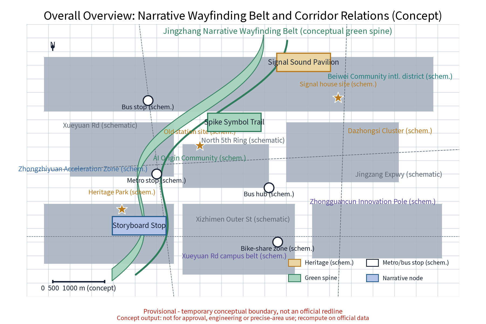
The concept base map carries a north arrow, concept scale bar, legend and place names; metro stops, bus stops, roads, communities and heritage markers are schematic positions only. All figures are recomputed in full once official geometry is published. Full report: proposal.en.html (Chinese: proposal.html).
Three-tier scope
Official scopes (announcement textual caliber): coordinated research approx. 43.6 km2 | overall design approx. 11.4 km2 | key areas approx. 368.4 ha. This package sits under the three tiers: green-belt spine of the overall design scope with three key-area nodes as deep-design objects; all geometry is a provisional boundary demonstration.
Key areas
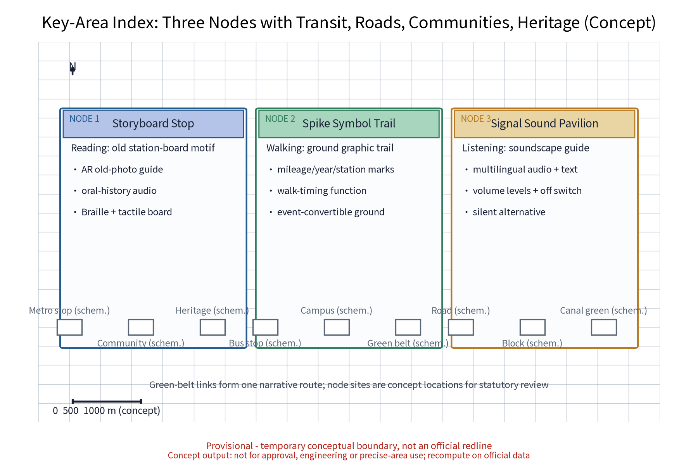
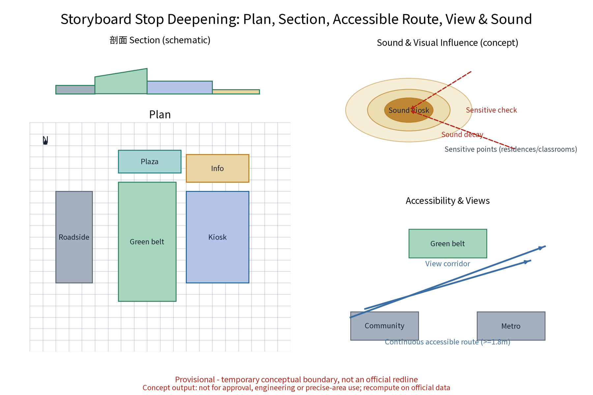
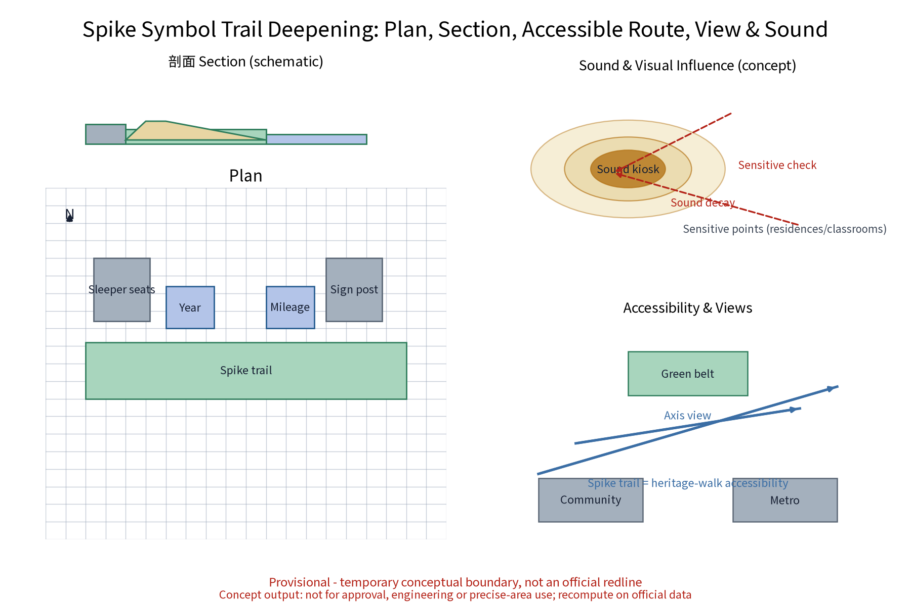
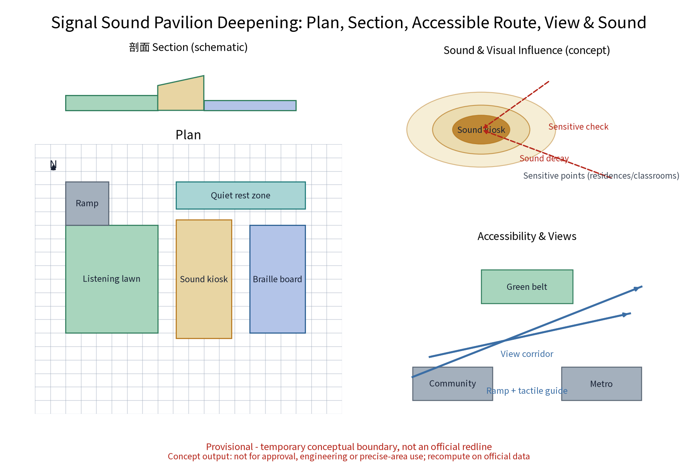
Every node comes with plan, section, continuous accessible route and view/sound influence diagrams; node sites are concept locations subject to statutory review and relocation.
Land use
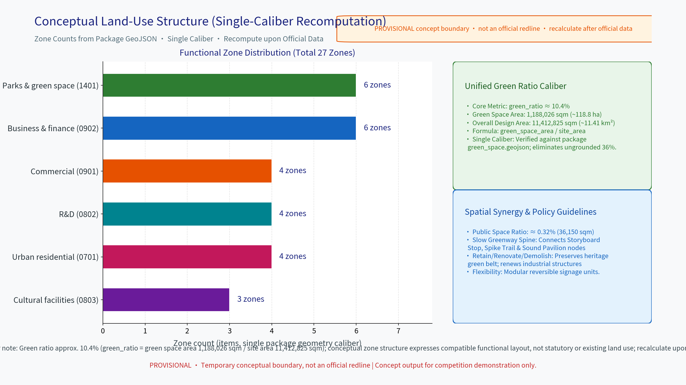
Conceptual land-use structure (provisional, low confidence, recomputed after official calibers): green ratio approx. 10.4% (green space area approx. 1,188,026 sqm / site area approx. 11,412,825 sqm), covering park and green spaces, cultural facilities, R&D, commercial, business/finance, and residential functions. It expresses relative configurations of compatible directions only - never existing or statutory land use; ratios and counts are plotted separately.
Slow traffic
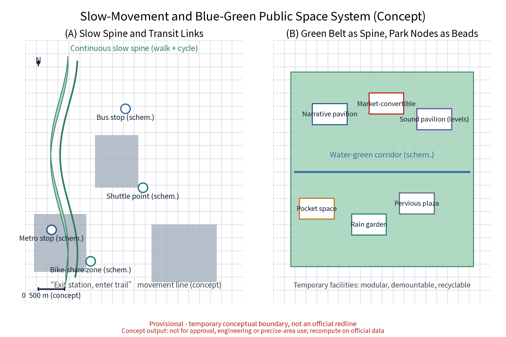
Slow traffic first: the continuous green-belt slow axis is designed as one with the sign system; an "exit station, enter trail" line links existing metro stops and bus stops; event traffic relies on rail plus shuttles with time-phased dispersal; rest points and accessible facilities at a concept spacing of about 500 m (recomputed in the formal phase).
Blue-green public space
Green belt as spine, park nodes as beads; rain gardens and pervious paving strengthen resilience; public space is convertible (lecture hall / market / everyday leisure); temporary facilities are modular, demountable and recyclable; quiet hours at sensitive points; all-age accessibility with continuous accessible routes.
Buildings
Retain, renovate and demolish in parallel: heritage green belt, historically valuable station buildings and industrial structures are retained first; inefficient factory and park buildings are renewed; demolition is limited to case-proven scattered dilapidated buildings through statutory review. This proposal presets no building-scale figures; signage is reversible and relocatable.
Renewal projects
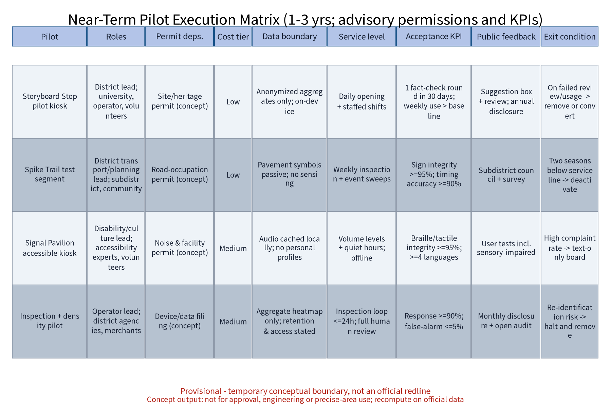
Near term 1-3 years: whole-line spine, three-node pilots, annual programmes start; mid term 3-5 years: rollout and content expansion; long term 5-10 years: rolling renewal. The pilot matrix states responsible roles (lead/collaborate), permit dependencies, cost tiers, data boundaries, service levels, acceptance KPIs, public feedback and exit conditions; developer community, scenario openness and attraction mechanisms included.
AI scenarios
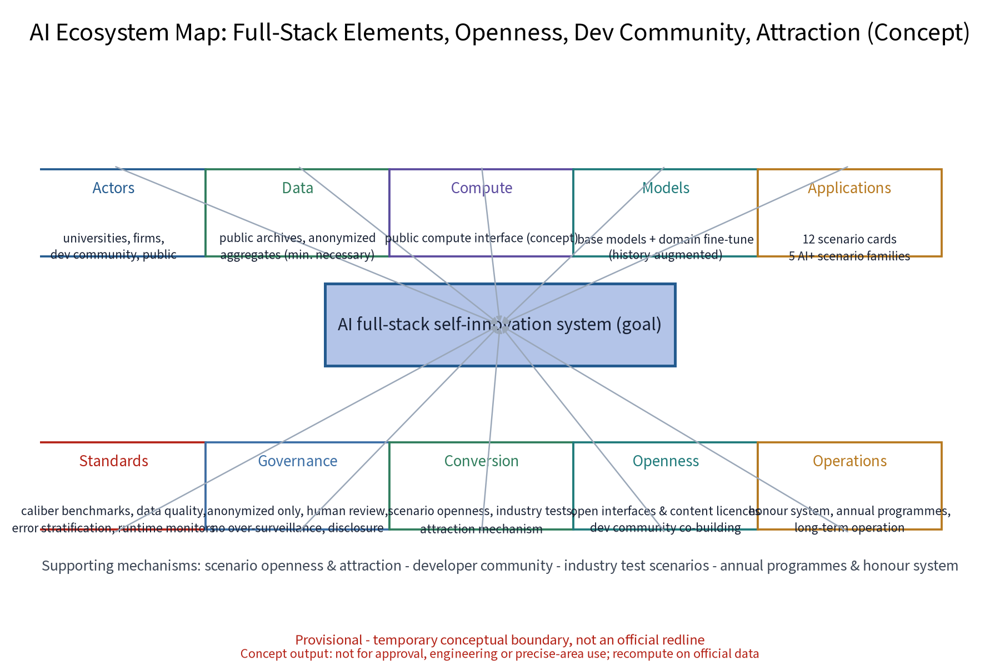
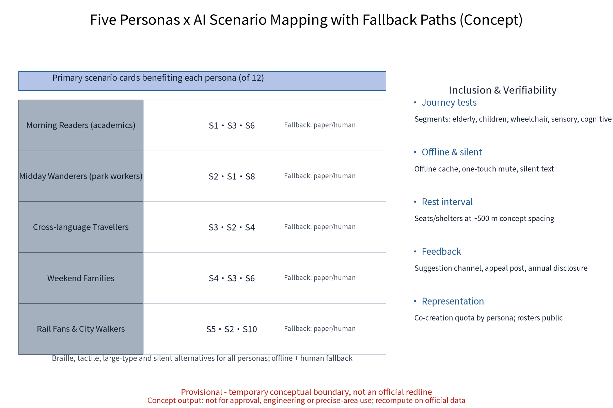
12 scenario cards cover culture, public services, space, governance, industry and transport. AI governance bottom lines: anonymized aggregation only, human review of key decisions, no over-surveillance. Every AI scenario has a non-AI fallback path (paper, human, Braille/tactile, silent alternative, offline cache).
| Cards | Name | Domain |
|---|---|---|
| S1-S4 | AR old-photo guide / walk timing / multilingual soundscape / reconstruction | Culture |
| S5-S6 | Facility inspection / density allocation | Governance |
| S7-S8 | Translation assistant / text-first guide | Public services |
| S9-S11 | Oral-history workshop / co-creation festival / fact-check desk | Space & industry |
| S12 | Event-way guidance | Transport |
Core metrics
site_area_sqm (overall design, provisional)approx. 1141.3 ha (rounded display) green_ratio (low confidence)approx. 10% public_space_ratio (low confidence)approx. 0.3% persona_countfive personas scenario_card_count12 cards global_case_count6 cases annual_program_count3 brands industry_test_scenario_count3 tests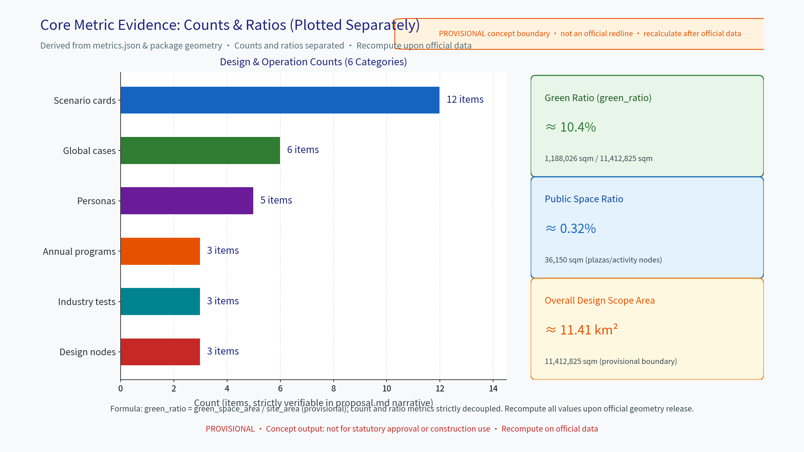
Note: areas and ratios are provisional low-confidence rounded values, recomputed in full after official data is published; counts and ratios are plotted separately; every indicator states source, formula, confidence, use restriction and recompute trigger (proposal.md metrics section).
Task coverage
The compliance matrix (compliance_matrix.json) covers 23 tasks: 17 announcement items (1.3.1-1.5.3.3) plus 6 agent open-call tasks (agent.1-agent.6), each with evidence_summary_zh and report sections; brand identity, component library, honour system, developer community, scenario openness, attraction mechanisms and international communication are all elaborated in the text.
Sources
Sources are registered in sources.json: the organizer announcement, taskbook, professional standards, generative-AI interim measures, accessibility law, provisional boundaries and the benchmarking cases (High Line, Freedom Trail, Berliner Mauerweg, Rail Corridor, Cheonggyecheon, Shougang) with publisher, publication/access dates and reuse boundaries; font and figure asset entries record licences. Unverified historical material is treated as research hypotheses.
Assumptions
Key assumptions are registered in assumptions.json (6 items): provisional boundary, missing statutory controls, data boundary, reversible design, privacy and advisory events; risks are registered across six dimensions in risk.json with mitigations. Everything is conceptual advice - not for approval or engineering use.
Self-check status
The self-check result follows self_check.json and figure_qc: the package passes the four gates (deterministic/spatial/visual/professional) and all figures pass machine QC (ink, clipping, text overlap); repair counts are in changelog.md.
Boundary note: this page is based on a provisional boundary and concept calibers; all figures are low-confidence rounded values - not for approval, engineering or precise-area use. Recompute when official data is published.